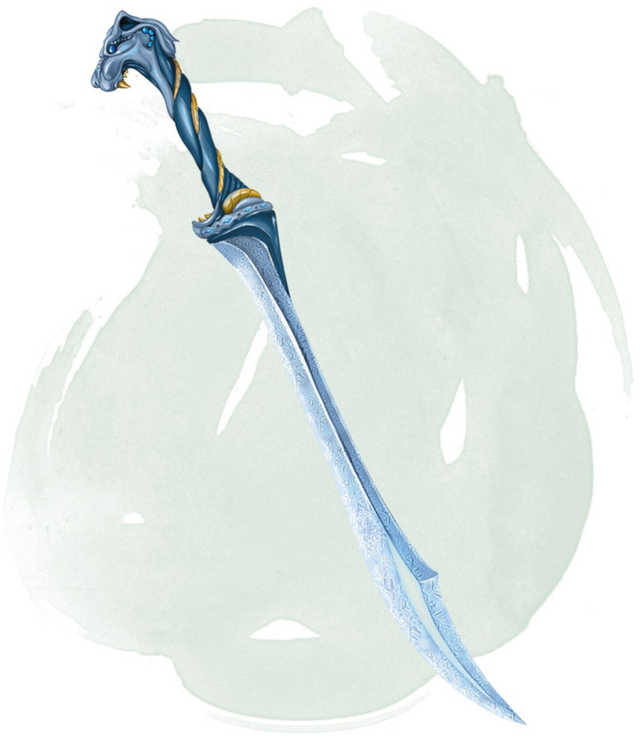

Frost Brand
[ Fer gelé ]
Weapon (any sword), very rare (requires attunement)
When you hit with an attack using this magic sword, the target takes an extra 1d6 cold damage. In addition, while you hold the sword, you have resistance to fire damage.
In freezing temperatures, the blade sheds bright light in a 10-foot radius and dim light for an additional 10 feet.
When you draw this weapon, you can extinguish all nonmagical flames within 30 feet of you. This property can be used no more than once per hour.
In freezing temperatures, the blade sheds bright light in a 10-foot radius and dim light for an additional 10 feet.
When you draw this weapon, you can extinguish all nonmagical flames within 30 feet of you. This property can be used no more than once per hour.
Dungeon Master´s Guide (SRD)
